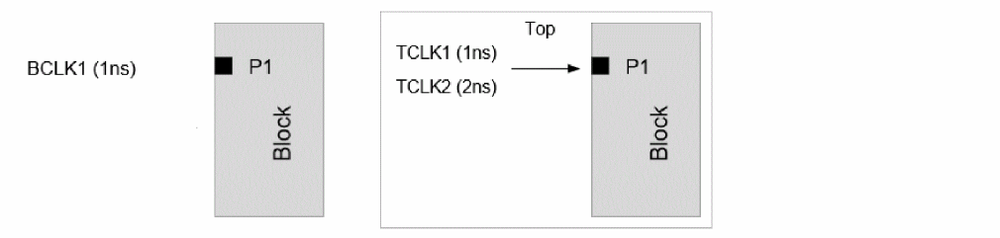
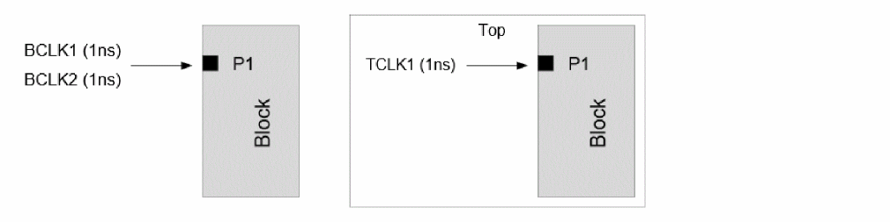
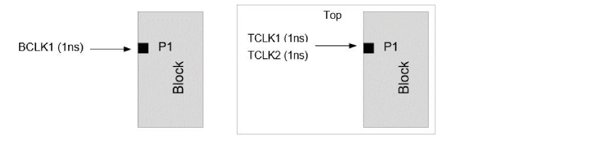
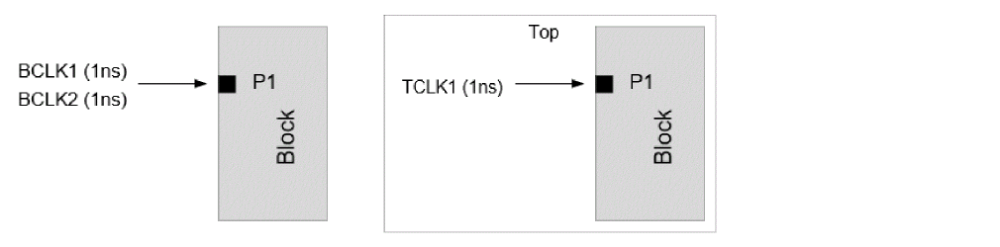
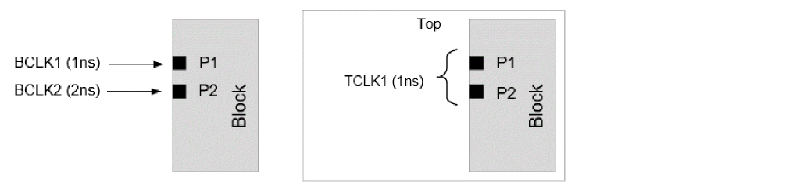

Manual Clock Mapping Specification
To manually map multiple top clocks to a single block clock, Tempus supports the set_timing_context_clock_mapping -add command parameter. The multiple 1-to-1 clock mappings can be used to specify one block clock to multiple top clock mappings with the -add parameter. The manual clock mapping applies to both the clock and data phases. For example:
Example 1: To map block clock BCLK1 to both TCLK1 / TCLK2, the -add parameter is used:

set_timing_context_clock_mapping -block_clock BCLK1 -top_clock TCLK1 -view <view>
set_timing_context_clock_mapping -block_clock BCLK1 -top_clock TCLK2 -view <view> \ -add
The block clock mapping specified without the -add parameter will override the previous mappings done for that block clock. In this example, without the -add parameter, BCLK1 will be mapped to TCLK2 only.
Example 2: No clock (BCLK1 or BCLK2) will be auto-mapped due to multiple matching block clocks. In this example, the block clock BCLK1 is mapped to top clock TCLK1, and block clock BCLK2 is mapped to top clock TCLK1.

You will need to provide manual mapping commands as given below:
set_timing_context_clock_mapping -block_clock BCLK1 -top_clock TCLK1 -view <view>
set_timing_context_clock_mapping -block_clock BCLK2 -top_clock TCLK1 -view <view>
The -add parameter is not required since each block clock maps to only one top clock. The auto-clock mapping will not be attempted on any block clock for which manual mapping is user-specified. If a block clock is to be mapped manually, you should specify all the clock mappings applicable for that block clock.
The following examples illustrate some cases where manual clock mapping is required.
Example 3: By default, the software will map BCLK1 to TCLK1 (due to matching property) only. To map BCLK1 to TCLK2 also, you can manually map BCLK1 to both TCLK1 and TCLK2 with the -add parameter:

Example 4: By default, the software will map BCLK1 to TCLK1 only (because of matching property), and BCLK2 will remain unmapped. If BCLK2 is manually mapped to TCLK1, then BCLK1 will remain unmapped.

Example 5: By default, the software will map BCLK1 to TCLK1 and BCLK2 will remain unmapped. If BCLK2 is manually mapped to TCLK1 (on Port P2), then BCLK1 will be auto mapped to TCLK1 (on Port P1).

Return to top